1. What is the place value of digit 4 in the number 245687?
2. What is the square root of 784?
3. Round on 89370 to the nearest thousands.
4. Work out: 356 x 214
5. Find the G.C.D of 16, 24, 32
6. Subtract: 863351 - 572440
7. Find the volume of the cuboid below in m3
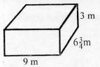
8. During the Homa Bay senatorial campaign rally, the number of men was 83479. the women were 75218 while children were 135697. How many more children than men were there?
9. Evaluate: (4⁄7)2
10. Convert 0.24 into a fraction and simplify it.
11. Workout: 0.554 + 6.08 + 10.0354
12. Add: 24⁄5 + 13⁄10 + 35⁄6
13. How many metres are there in 5 km 720 m?
14. Workout: 1089 ÷ 1.8
15. Abuya’s plot of land measures 480 m by 260 m as shown below.
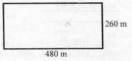
16. Narcos bought the following items from a shop;
4 kg of rice @ sh 50 per kg
1½ kg sugar @ sh 60
2 bars of chocolate for sh 40
17. In a town. 25% of the population are children. If the town has 382000 people, find out how many children are there.
18. Find the width x if the perimeter of the rectangle below is 216 cm.
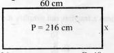
19. Find the circumference of the circle below.(π = 22⁄7)
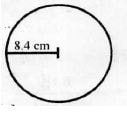
20. A bus left Mombasa at 0715 hrs and reached Nairobi after 8 hrs 30 minutes. At what time did the reach Nairobi? (Give your answer in the 24 hr clock system)
21. Subtract:
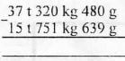
22. The triangle below has an area of 75 cm2. The base of triangle is 5 cm. What is the height of the triangle?
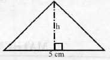
23. Lilian bought a dress for sh 1800. She later sold it making a loss of 10%. How much did she sell it at?
24. Find the area of the unshaded part in the figure below.
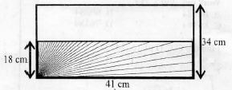
25. Solve for x in the equation:
5(2x + 1 ) - 1 = 9
26. What is the name of the triangle drawn below?
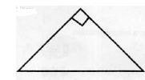
27. Gesare drove a distance of 150 km from 8 am to 10 am . What was his average speed?
28. Find the value of the angle marked 'd' in the figure below
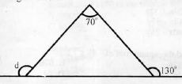
29. The table below shows the number of bags of mangoes harvested by a farmer in five days.
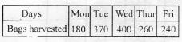
30. How many minutes are there in 83 hours?
31. Shadrack bought a shirt for sh 500 and later sold it for sh 600. Find the percentage profit.
32. Maina has 7650 kg of maize in his store. He plans to buy an additional 3480 kg. How many tonnes of maize will he have?
33. The table below shows the commission charges for sending parcels.
34. Express 2.45 am in 24hr clock system.
35. How many 2.5 dl packets of juice can be filled from 4.25 litres of juice?
36. After selling 120 sheep. Mwangi was left with 70% of the sheep. How many sheep was he left with?
37. If 1 cm represents 20 m. what length will represent 80 in on the map?
38. A motorist travelled at a uniform speed of 90 km/h. Work out his speed in m/s.
39. Work out: 4.3 x 17.12 = ___
40. What is the value of: 3 ÷ 7 (correct to decimal places).
41. Find the area of the plot below in hectares.
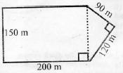
42. The distance between Kiptoo's home and the school is 8.3 km. What distance does he cover from home to school and back in 5 school days?
43. What is the next number in the sequence?
3, 7, 10, 14, 17, ___
44. Change 38⁄7 into a mixed fraction
45. Work out: 9996 ÷ 98
46. What is the reciprocal of 7?
47. Simplify: 10(3x + 4y) + 5(2x - 3y)
48. Find the square root of: 48 x 12
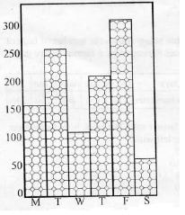
49. How many kilograms of coffee did the farmer pick altogether?
50. On which day did he pick the greatest mass of coffee?